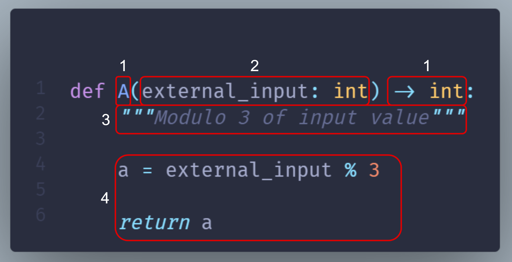
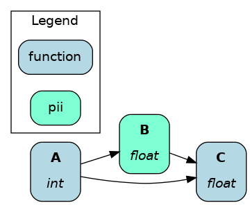

Function modifiers¶
In Functions, nodes & dataflow, we discussed how to write Python functions to define Apache Hamilton nodes and dataflow. In the basic case, each function defines one node.
Yet, it’s common to need nodes with similar purposes but different dependencies, such as preprocessing training and evaluation datasets. In that case, using a function modifier can help create both nodes from a single Apache Hamilton function!
On this page, you’ll learn:
Python decorators basics
Add metadata to node
Validate node output
Split node output into n nodes
Define one function, create n nodes
Select nodes to load from module
This page covers important conceptual notions but is not exhaustive. To find details about all function modifiers see API references Decorators.
Decorators¶
Python decorators are statements that begin with @ located above function definitions. Apache Hamilton uses decorators to implement function modifiers and reduce the amount of code you have to write to make expressive dataflows.
Multiple decorators can be stacked on a single function and are applied from bottom to top. Apache Hamilton decorators should be insensitive to ordering, but be careful with non-Apache Hamilton decorators (e.g., @retries, @time). See this decorator primer to learn more.
Function modifiers were designed to have clear semantics, so you should be able to figure out what they do from their name. For instance, the following code adds metadata using @tag and conducts some checks over the return value with check_output.
@tag(owner='Data-Science', pii='False')
@check_output(data_type=np.float64, range=(-5.0, 5.0), allow_nans=False)
def height_zero_mean_unit_variance(
height_zero_mean: pd.Series, height_std_dev: pd.Series
) -> pd.Series:
"""Zero mean unit variance value of height"""
return height_zero_mean / height_std_dev
Reminder: Anatomy of a node¶
This section from the page Functions, nodes & dataflow details how a Python function maps to a Apache Hamilton node. We’ll reuse these terms to explain the function modifiers.
{kind=link}
id |
Function components |
Node components |
|---|---|---|
1 |
Function name and return type annotation |
Node name and type |
2 |
Parameter names and type annotations |
Node dependencies |
3 |
Docstring |
Description of the node return value |
4 |
Function body |
Implementation of the node |
Add metadata to a node¶
@tag¶
The @tag decorator doesn’t modify the function/node. It attaches metadata to the node that can be used by Apache Hamilton and you. It can help tag nodes by ownership, data source, version, infrastructure, and anything else.
For example, this tags the associated data product and the sensitivity of the data.
from hamilton.function_modifiers import tag
@tag(data_product='final', pii='true')
def final_column(
intermediate_column: pd.Series
) -> pd.Series: ...
Query node by tag¶
Once you built your Driver, you can get all nodes with Driver.list_available_variables() and then filter them by tag. The following gets all the nodes for which data_product="final" and passes them to driver.execute()
dr = driver.Builder().with_modules(my_module).build()
tagged_nodes = [node.name for node in dr.list_available_variables()
if 'final' == node.tags.get('data_product')]
results = dr.execute(tagged_nodes)
Customize visualization by tag¶
Tags are also accessible to the visualization styling feature, allowing you to highlight important nodes for your documentation. See Apply custom style for details.
{kind=link}
@schema¶
The @schema function modifiers provides a lightweight way to add type metadata to dataframes. It works by specifying tuples of (field_name, field_type) with types as strings.
from hamilton.function_modifiers import schema
@schema.output(
("a", "int"),
("b", "float"),
("c", "str")
)
def clean_df(raw_df: pd.DataFrame) -> pd.DataFrame:
return pd.DataFrame.from_records(
{"a": [1], "b": [2.0], "c": ["3"]}
)
Validate node output¶
The @check_output function modifiers are applied on the node output / function return and therefore don’t directly affect node behavior. Decorators separate data validation from the function body where the core logic is. It improves function readability, and it helps reusing and maintaining standardized checks across multiple functions.
Note
In the future, validatation capabailities may be added to @schema. For now, it’s only added metadata.
@check_output*¶
The @check_output implements many data checks for Python objects and DataFrame/Series including data type, min/max/between, count, fraction of null/nan values, and allow null/nan. Failed checks are either logged (importance="warn") or make the dataflow fail (importance="fail").
The next snippet checks if the returned Series is of type np.int32, which is non-nullable, and if its within the range 0-100, and logs failed checks. This allows us to manually review instances where data validation failed.
from hamilton.function_modifiers import check_output
@check_output(data_type=np.int32, range=(0,100), importance="warn")
def quiz_grade(quiz_df: pd.DataFrame) -> pd.Series:
return ...
To see all available validators, go to the file
hamilton/data_quality/default_validators.pyand view the variableAVAILABLE_DEFAULT_VALIDATORS.The function modifier
@check_output_customallows you to define your own validator. Validators inherit thebase.BaseDefaultValidatorclass and are essentially standardized Apache Hamilton node definitions (instead of functions). Seehamilton/data_quality/default_validators.pyor reach out on Slack for help!Note:
@check_output_customdecorators cannot be stacked, but they instead can take multiple validators.
Note
As you see, validation steps effectively add nodes to the dataflow and the visualization. This helps trace which specific check failed for instance, but it can make visualizations harder to read.
You can hide these nodes using the custom visualization style feature (see Apply custom style) by applying the style {"style": "invis"} to nodes with the tag hamilton.data_quality.source_node. This will only keep the original nodes and their _raw variant.
pandera support¶
Apache Hamilton has a pandera plugin for data validation that you can install with pip install sf-hamilton[pandera]. Then, you can pass a pandera schema (for DataFrame or Series) to @check_output(schema=...).
pydantic support¶
Apache Hamilton also supports data validation of pydantic models, which can be enabled with pip install sf-hamilton[pydantic]. With pydantic installed, you can pass any subclass of the pydantic base model to @check_output(model=...). Pydantic validation is performed in strict mode, meaning that raw values will not be coerced to the model’s types. For more information on strict mode see the pydantic docs.
Split node output into n nodes¶
Sometimes, your node outputs multiple values that you would like to name and make available to other nodes. These function modifiers act on the node output / function return.
Note
To add metadata to extracted nodes, use @tag_output, which works just like @tag.
@extract_fields¶
A good example is splitting a dataset into train, validation, and test splits. We will use @extract_fields, which requires specifying in a dictionary the field_name: field_type of each field.
from hamilton.function_modifiers import extract_fields
@extract_fields(dict( # don't forget the dictionary
X_train=np.ndarray,
X_validation=np.ndarray,
X_test=np.ndarray,
))
def dataset_splits(X: np.ndarray) -> dict:
"""Randomly split data into train, validation, test"""
X_train, X_validation, X_test = random_split(X)
return dict(
X_train=X_train, # keys match those from @extract_fields
X_validation=X_validation,
X_test=X_test,
)
{kind=link}
Now, X_train, X_validation, and X_test are available to other nodes, and they can be queried by .execute(). But, since dataset_splits is its own node, you can query it to get all splits in a dictionary!
@extract_columns¶
@extract_columns is a specialized version of @extract_fields to get individual columns of a dataframe (pandas, polars, Spark, etc.). It enables column-level lineage which improves visibility over data transformations and facilitates reusing feature transformations. Also, it can reduce memory usage by avoiding moving large dataframe through nodes.
Since it knows how to extract series from a dataframe, you just have to specify the column names.
from hamilton.function_modifiers import extract_columns
# assuming `user_id` and `weekday` are existing columns
# note that strings are passed directly, without a list
@extract_columns("user_id", "weekday")
def clean_df(raw_df: pd.DataFrame) -> pd.DataFrame:
"""Clean my data"""
clean_df = clean_my_data(raw_df)
return clean_df
{kind=link}
Define one function, create n nodes¶
The family of @parameterize function modifiers allows the creation of multiple nodes with the same node implementation / function body (and therefore output type), but different node inputs.
This has many applications, such as producing the same performance plot for multiple models or computing groupby aggregates along different dimensions.
@parameterize¶
You need to specify the generated node name, a dictionary of dependencies, and optionally a docstring. For the dependencies, you can pass constants with value() or get them from the dataflow by passing a node name to source(). These notions are tricky at first, but let’s look at an example:
We create 3 nodes: revenue_by_age, revenue_by_country, revenue_by_occupation. For each, we get the dataframe df from the dataflow using source() and specify a different groupby_col with value(). Also, the docstring uses {groupby_col} to have the value inserted.
from hamilton.function_modifiers import parameterize
from hamilton.function_modifiers import source, value
@parameterize(
revenue_by_age=dict(df=source("df"), groupby_col=value("age")),
revenue_by_country=dict(df=source("df"), groupby_col=value("country")),
revenue_by_occupation=dict(df=source("df"), groupby_col=value("occupation")),
)
def population_metrics(df: pd.DataFrame, groupby_col: str) -> dict:
"""Compute df metrics aggregates over dimension {groupby_col}"""
return df.groupby(groupby_col)["revenue"] \
.agg(["mean", "min", "max"]) \
.to_dict()
The above example mixes constant
value()and dataflowsource()dependencies. The syntax is indeed verbose. Simplified syntaxes are available through@parameterize_valuesand@parameterize_sourcesif you only need one type of dependency.If you need to extract columns from the output of a generated node, use
@parameterize_extract_columns
Select functions to include¶
The family of @config decorators doesn’t modify the function. Rather, it tells the Driver which functions from the module (and therefore nodes) to include in the dataflow. This helps projects that need to run in different contexts (e.g., locally vs orchestrator) or need to swap different implementations of a node (e.g., ML experiments, code migration, A/B testing).
Note
At first, there can be confusion between @config and the inputs and overrides of the Driver’s .execute() and .materialize() methods. In common language, people might refer to the .execute(inputs=..., overrides=...) as a configuration. However, these two affect the values passing through the dataflow once the Driver is built while @config determines how the Driver is built.
@config¶
For the decorator, you must specify one or more key=value pairs. Then, you need to add to the Builder .with_config() and give it a dictionary of key=value pairs. This will determine which functions to load.
This example uses @config.when() to select between a binary classifier and a regressor model. Notice a few elements:
both functions have the same name
base_modelwith a suffix__binaryor__regression. This is required because Python enforces unique function names. After the config determines which function to load, Apache Hamilton will remove the suffix from the node name.the two functions have different return types, so
train_modelneeds to annotatebase_modelas aUnion[]type.
# model_training.py
from hamilton.function_modifiers import config
@config.when(task="binary_classification")
def base_model__binary() -> XGBClassifier:
return XGBClassifier(...)
@config.when(task="continuous_regression")
def base_model__regression() -> XGBRegressor:
return XGBRegressor(...)
def train_model(
base_model: Union[XGBClassifier, XGBRegressor],
X: np.ndarray,
y: np.ndarray,
) -> Union[XGBClassifier, XGBRegressor]:
return ...
# run.py
dr = (
driver.Builder()
.with_modules(model_training)
.with_config(dict(task="continuous_regression"))
.build()
)
{kind=link}
{kind=link}
In the above example, if the Driver receives no value for the key task or the value isn’t "binary_classification" or "continuous_regression", there would be no base_model node loaded and train_model would fail.
Using @config.when_not() can help set up a default case and ensure a base_model node is always loaded.
@config.when(library="xgboost")
def base_model__xgboost() -> XGBClassifier:
return XGBClassifier(...)
@config.when_not(library="xgboost")
def base_model__default() -> sklearn.ensemble.RandomForestRegressor:
return sklearn.ensemble.RandomForestRegressor(...)
There exists also @config.when_in() and @config.when_not_in() that accept a list of values to check. Expanding on the previous example:
@config.when(library="xgboost")
def base_model__xgboost() -> XGBClassifier:
return XGBClassifier(...)
@config.when(library="lightgbm")
def base_model__lightgbm() -> LGBMClassifier:
return LGBMClassifier(...)
@config.when_not_in(library=["xgboost", "lightgbm"])
def base_model__default() -> sklearn.ensemble.RandomForestRegressor:
return sklearn.ensemble.RandomForestRegressor(...)
Load and save external data¶
Most dataflows require reading or writing data to external sources in some capacity. It’s a good idea to conduct this step in a node separated from transformations to trace failures more easily.
Nevertheless, adding one function per read/write becomes tedious and hard to maintain. Apache Hamilton provides well-tested implementations for common formats (JSON, CSV, Parquet, etc.) available through @load_from and @save_to decorators and materializers (see Materialization).
More formats are available through Apache Hamilton plugins, and you should be able to add your own custom loader/saver (reach out on Slack for help!)
@load_from¶
You can think of @load_from as adding an upstream node. The next example specifies the path of the file, which will be loaded in the variable raw_data. Note that the variable type should be compatible with the loaded file (dict for JSON here).
@load_from.json(path="/path/to/file.json")
def normalized_data(raw_data: dict) -> dict:
return ...
{kind=link}
It is possible to use source() (like in @parameterize) to specify the file path from the driver code. See:
# functions.py
@load_from.json(path=source("raw_data_path"))
def normalized_data(raw_data: dict) -> dict:
return ...
# run.py
dr = driver.Builder().with_modules(functions).build()
dr.execute(["normalized_data"], inputs=dict(raw_data_path="./this/file.json"))
You will need to use the inject_ keyword when you load multiple files into a node or your function has multiple parameters.
@load_from.json(path="/path/to/logs.json", inject_="logs1")
@load_from.json(path="/path/to/other/logs.json", inject_="logs2")
def merged_logs(logs1: dict, logs2: dict) -> dict:
return ...
{kind=link}
@save_to¶
The @save_to decorator works very similarly to @load_from. In this case, path=... specifies where the data will be saved, and an output_name_ is required to be able to request the node from Driver.execute(). Here again, source() can be used.
# functions.py
@save_to.json(path=source("metrics_path"), output_name_="metrics_to_json")
def eval_metric(x: np.ndarray, y: np.ndarray) -> dict:
return dict(...)
# run.py
dr = driver.Builder().with_modules(functions).build()
dr.execute(["metrics_to_json"], inputs=dict(metrics_path="./out/metrics.json"))
{kind=link}